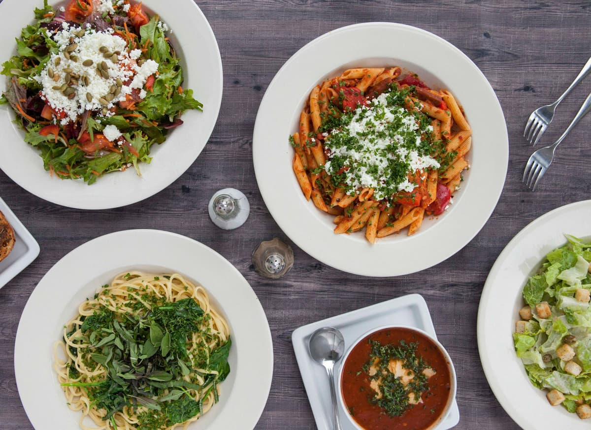

Build-Your-Own Pasta in Vancouver,
Exactly How You Crave It
Vancouver's first and finest build-your-own pasta restaurant, on Davie Street since 2010. Hand-tossed, loaded with real ingredients — dine-in, takeout, or delivered hot to your door.
Build Your Own Pasta
Choose your favorite items and create your own dish. Follow the five steps below — it's your pasta, your rules.
Pasta in Vancouver, Made Your Way — Since 2010
Basil Pasta Bar opened on Davie Street in 2010 with one simple idea: pasta should be fresh, affordable and made exactly the way you like it. We were Vancouver's first build-your-own pasta restaurant, and we've been tossing pasta to order ever since.
Pick your pasta, sauce, protein, veggies and garnish — there's no limit on toppings — or go with a house special like Spaghetti Puttanesca, BC Smoked Salmon Fettuccine or Pesto Shrimp Linguine. Vegetarian dishes, spicy sauces and gluten-free penne are all on the menu.
You'll find us at 636 Davie Street near Seymour, on the edge of Yaletown and downtown Vancouver, open until 11 PM Sunday to Thursday and 2 AM on Friday and Saturday. Can't make it in? Order pasta delivery or takeout through Uber Eats, SkipTheDishes or DoorDash.
Menu & prices · Build your own pasta · Pasta delivery & takeout
Come Say Hi

Pasta Delivery in Vancouver, Daily
11:30 AM – 10 PM every day. Pick your favorite delivery platform below.
Location & Hours
Visit Us
On Davie Street near Seymour, on the edge of Yaletown and downtown Vancouver. Get directions
Hours
Pasta in Vancouver: Your Questions
Where is Basil Pasta Bar in Vancouver?
Basil Pasta Bar is at 636 Davie Street, Vancouver, BC V6B 2G5, near Davie and Seymour on the edge of Yaletown and downtown Vancouver.
What are Basil Pasta Bar’s hours?
We’re open Sunday to Thursday 11:30 AM – 11:00 PM and Friday and Saturday 11:30 AM – 2:00 AM. Delivery through the apps runs daily from 11:30 AM to 10:00 PM.
Can I build my own pasta?
Yes. Pick your pasta, sauce, protein, veggies and garnish — there’s no limit on toppings. Build-your-own pasta starts at $13.95 (GST · Gnocchi, Ravioli, Whole Wheat Penne & Gluten Free Penne add 50¢).
Do you have vegetarian or gluten-free pasta in Vancouver?
Yes. Vegetarian pastas are marked on the menu, and you can build a fully vegetarian plate from our veggies, sauces and cheeses. Gluten-free penne is available for build-your-own pasta. Like it spicy? Just ask.
Do you offer pasta delivery and takeout?
Yes. Order pasta for delivery through Uber Eats, SkipTheDishes or DoorDash, or call 1 (604) 568-3106 and pick it up at 636 Davie Street. Prices are for dine-in and takeout; delivery prices are slightly higher.
How much is pasta at Basil Pasta Bar?
Our house special and vegetarian pastas range from $13.95 to $16.45, and build-your-own pasta starts at $13.95. See the full menu with current prices on our menu page.